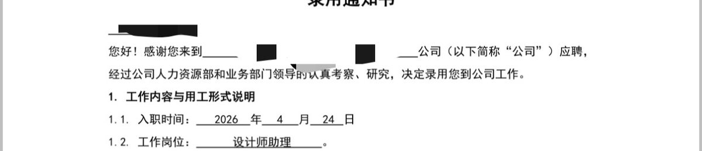

沐安ねこ
@show5560
@yunxiao52188 羡慕😭

雲消
@yunxiao52188
孩子们。。。感觉我应聘好快啊。。。设计这一块，长发真的一点都不影响啊，建议跨女们都去学设计()，上次是一周不到找到工作，好家伙这次更离谱，三天就找到工作了，hr、老板、部门主管三个人一块面试，当场就成了，还是双休的🤓
面试的时候主打一个自信，与面试官有眼神交流，真的挺好过的。 https://t.co/7TIJWG0Vsj